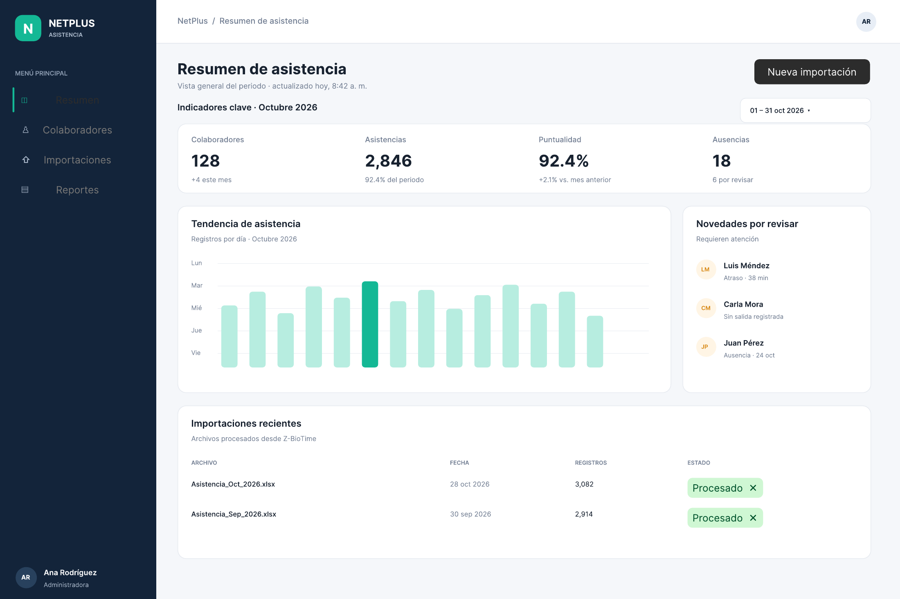
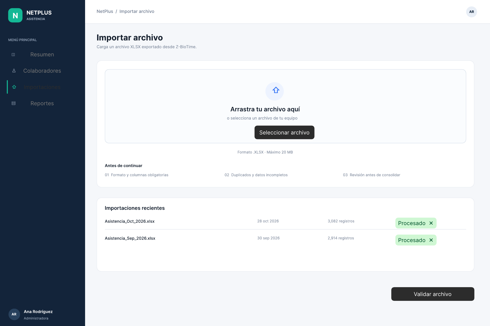
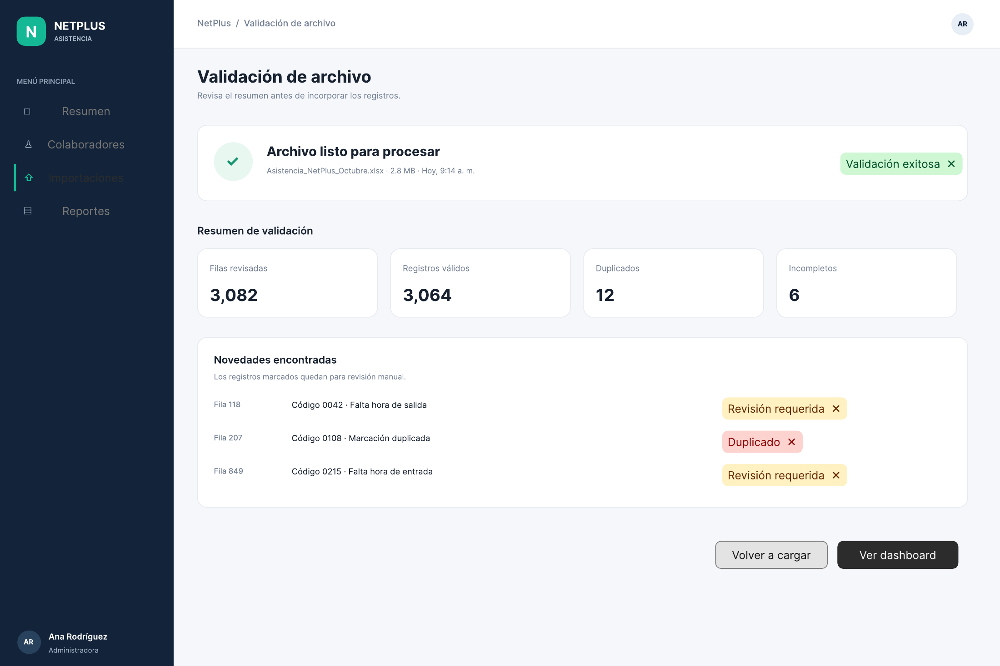
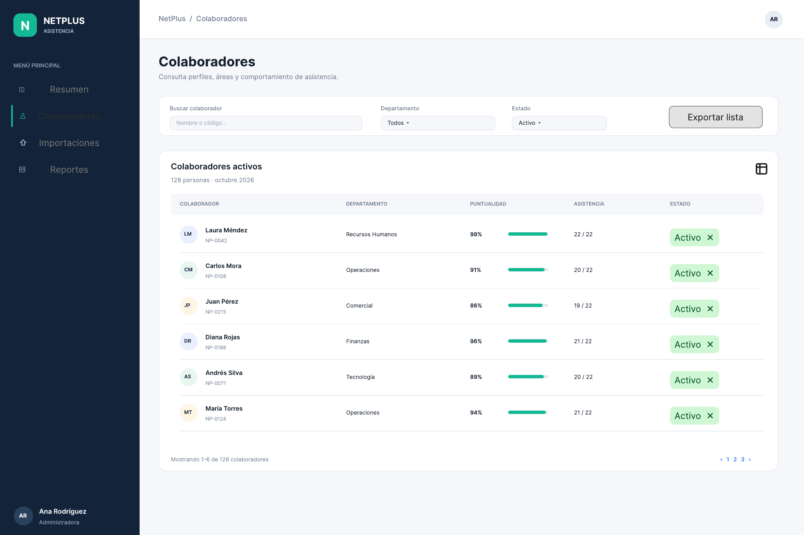
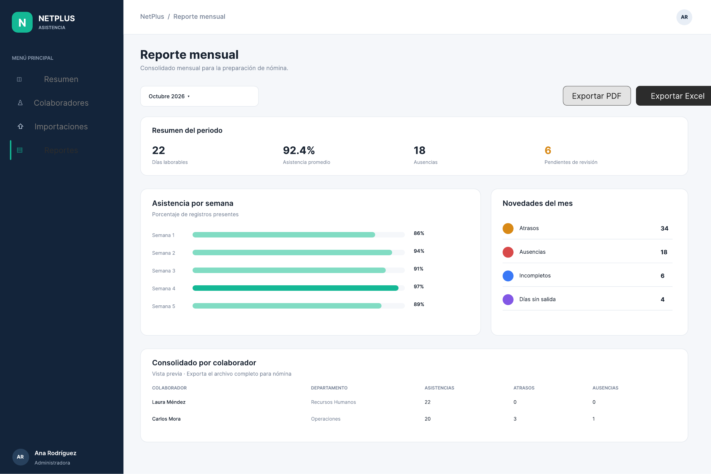

1. Requisitos funcionales
Los siguientes requisitos expresan las funciones identificadas en la reunión. Se utiliza la forma «el sistema deberá» para facilitar su evaluación posterior. Cuando la operación exacta todavía depende de aclaraciones, esto se indica en la observación correspondiente. Las prioridades son una propuesta inicial del equipo, no una clasificación formalmente aprobada por Netplus.
RF-01. Importación de reportes detallados de marcaciones
| Descripción | El sistema deberá permitir incorporar el reporte de marcaciones exportado desde la plataforma actual de Netplus. |
|---|---|
| Entradas | Archivo Excel de marcaciones de los colaboradores, correspondiente al período seleccionado. |
| Proceso esperado | Leer la información de fecha y hora, tipo de marcación y origen de registro; asociar los registros con el colaborador correspondiente. Deberá contemplarse el formato mostrado en la reunión, en el que cada hoja corresponde a un trabajador. |
| Salidas | Marcaciones disponibles para las consultas y resúmenes de asistencia. |
| Criterio de verificación (propuesto) | Al incorporar un archivo de ejemplo, se identifican los colaboradores y sus marcaciones sin confundir registros entre hojas. |
| Referencia de la reunión | 21:11–22:03; demostración de exportación 18:09–20:28. |
| Prioridad inicial | Alta (propuesta) |
| Punto por validar | Se requiere una muestra real de Excel para definir columnas, identificadores y criterios ante archivos repetidos. |
RF-02. Importación del resumen de marcación mensual
| Descripción | El sistema deberá considerar la información del reporte mensual de marcaciones mostrado por Netplus, en el que se presentan datos de varios colaboradores en una sola hoja. |
|---|---|
| Entradas | Archivo Excel de marcación mensual generado por la plataforma actual. |
| Proceso esperado | Interpretar el resumen por colaborador y período, sin asumir que las columnas o estructuras son iguales a las del reporte detallado. |
| Salidas | Resumen mensual utilizable para consultas y conciliación de novedades. |
| Criterio de verificación (propuesto) | Una muestra del reporte puede procesarse y relacionarse correctamente con los colaboradores. |
| Referencia de la reunión | 11:42–13:14. |
| Prioridad inicial | Media (propuesta) |
| Punto por validar | Debe definirse si es indispensable procesar los dos tipos de reporte o si uno de ellos basta para los indicadores y la nómina. |
RF-03. Incorporación de permisos y sus estados de aprobación
| Descripción | El sistema deberá permitir consultar las novedades registradas en el reporte de permisos e identificar cuáles fueron aprobadas. |
|---|---|
| Entradas | Reporte Excel de permisos: colaborador, fechas u horas, motivo y estado de aprobación, según las columnas disponibles. |
| Proceso esperado | Vincular los permisos a los colaboradores y distinguir al menos los estados «Aprobado» y «Pendiente». Los permisos pendientes no deberán contabilizarse como justificaciones aprobadas. |
| Salidas | Registro consultable de permisos y estado utilizado en la revisión de asistencia. |
| Criterio de verificación (propuesto) | Un permiso aprobado se considera justificado y uno pendiente no se incorpora como aprobación válida. |
| Referencia de la reunión | 11:42–13:14; 22:42–23:44. |
| Prioridad inicial | Alta (propuesta) |
| Punto por validar | Falta definir qué ocurre con permisos rechazados, anulados o modificados después de una primera carga. |
RF-04. Incorporación de registros de horas extras
| Descripción | El sistema deberá considerar los registros de horas adicionales gestionados en la plataforma de asistencia para su posterior consulta y resumen. |
|---|---|
| Entradas | Información de horas extras disponible en el sistema actual y su reporte de exportación, por confirmar. |
| Proceso esperado | Relacionar las horas adicionales con el colaborador y el período; verificar las condiciones de aprobación y clasificación una vez documentadas. |
| Salidas | Datos de horas adicionales preparados para resúmenes diarios y mensuales. |
| Criterio de verificación (propuesto) | El sistema distingue los registros cargados por empleado y período sin asignar horas a otra persona. |
| Referencia de la reunión | 00:00–01:48; 23:54–24:05. |
| Prioridad inicial | Alta (propuesta) |
| Punto por validar | La explicación del flujo de horas extras quedó interrumpida; se requiere el archivo de ejemplo y las reglas de aprobación y cálculo. |
RF-05. Actualización diaria de la información de asistencia
| Descripción | El sistema deberá facilitar la revisión de las marcaciones correspondientes al día anterior, una vez finalizada la jornada de los turnos. |
|---|---|
| Entradas | Reportes disponibles al inicio del siguiente día de trabajo. |
| Proceso esperado | Incorporar los datos actualizados y generar la información necesaria para la revisión diaria. Si se realizan nuevas cargas, deberá definirse cómo se actualizan los resultados existentes. |
| Salidas | Información del día anterior lista para consulta por Recursos Humanos. |
| Criterio de verificación (propuesto) | Al cargar los registros de un día completo, el resumen corresponde a esa fecha y no mezcla períodos. |
| Referencia de la reunión | 10:35–10:49; 22:19–23:44. |
| Prioridad inicial | Alta (propuesta) |
| Punto por validar | No se acordó si la actualización será automática, mediante carga manual o combinando ambos mecanismos. |
RF-06. Identificación de atrasos y ausencias
| Descripción | El sistema deberá presentar qué colaboradores registraron atrasos y ausencias en el período consultado. |
|---|---|
| Entradas | Marcaciones, información de jornada u horarios y, cuando corresponda, permisos asociados. |
| Proceso esperado | Comparar las marcaciones disponibles con la información requerida para determinar retrasos y ausencias. Aplicar reglas específicas una vez confirmadas por Netplus. |
| Salidas | Listado o resumen de colaboradores con atrasos y ausencias. |
| Criterio de verificación (propuesto) | Los casos preparados como prueba aparecen clasificados de acuerdo con la regla de horario aprobada. |
| Referencia de la reunión | 00:00–01:48; 03:16–03:41; 06:26–07:07. |
| Prioridad inicial | Alta (propuesta) |
| Punto por validar | Debe confirmarse de dónde se obtendrán los horarios y qué tolerancias se aplican a los atrasos. |
RF-07. Diferenciación de ausencias justificadas y pendientes
| Descripción | El sistema deberá distinguir las ausencias respaldadas por permisos aprobados de aquellas que todavía no cuentan con una aprobación registrada. |
|---|---|
| Entradas | Ausencias detectadas y reporte de permisos con sus estados. |
| Proceso esperado | Relacionar las novedades de asistencia con los permisos existentes y respetar la regla comunicada de no considerar «Pendiente» como aprobado. |
| Salidas | Resumen de ausencias con su situación de justificación. |
| Criterio de verificación (propuesto) | En una prueba con permiso aprobado y pendiente, ambos casos se muestran de manera diferenciada. |
| Referencia de la reunión | 00:00–01:48; 11:42–13:14; 22:42–23:44. |
| Prioridad inicial | Alta (propuesta) |
| Punto por validar | No corresponde marcar automáticamente todos los casos sin aprobación como faltas injustificadas definitivas sin validar la política de la empresa. |
RF-08. Resumen de horas adicionales y vacaciones
| Descripción | El sistema deberá presentar información resumida sobre las horas extras y suplementarias registradas, así como sobre los colaboradores que se encuentren en vacaciones. |
|---|---|
| Entradas | Datos de marcaciones, horas adicionales, permisos o reportes equivalentes disponibles. |
| Proceso esperado | Agrupar las novedades por colaborador y período; aplicar las reglas de cómputo y clasificación que proporcione Netplus. |
| Salidas | Totales o listados de horas adicionales y personal en vacaciones. |
| Criterio de verificación (propuesto) | Los valores del resumen coinciden con un conjunto de datos de prueba aceptado por la empresa. |
| Referencia de la reunión | 00:00–01:48; 03:16–03:41. |
| Prioridad inicial | Alta (propuesta) |
| Punto por validar | No se definieron fórmulas, recargos legales, franjas horarias ni una fuente definitiva de información de vacaciones. |
RF-09. Tablero de seguimiento diario de Recursos Humanos
| Descripción | El sistema deberá presentar un tablero que resuma la información diaria necesaria para el control de asistencia del personal. |
|---|---|
| Entradas | Resultados de marcaciones, atrasos, ausencias, permisos, vacaciones y horas adicionales procesadas. |
| Proceso esperado | Sintetizar las novedades de asistencia en indicadores y detalles consultables que permitan dar seguimiento a los colaboradores. |
| Salidas | Dashboard operativo con una visión clara del día consultado. |
| Criterio de verificación (propuesto) | Recursos Humanos puede visualizar las principales novedades del día sin revisar manualmente cada hoja del reporte original. |
| Referencia de la reunión | 00:00–01:48; 03:16–03:41; 06:26–07:07. |
| Prioridad inicial | Alta (propuesta) |
| Punto por validar | Filtros, gráficos específicos y posibilidad de descargar reportes son detalles de interfaz por definir. |
RF-10. Consolidado mensual para Contabilidad
| Descripción | El sistema deberá generar un resumen mensual de las novedades relacionadas con la asistencia y las horas de los colaboradores para apoyar el proceso de nómina. |
|---|---|
| Entradas | Información procesada durante el período comprendido del día 21 de un mes al día 20 del siguiente. |
| Proceso esperado | Agrupar la información de cada colaborador conforme al corte mensual utilizado por Netplus y prepararla para su revisión por Contabilidad. |
| Salidas | Reporte consolidado mensual que sirva como insumo del proceso contable. |
| Criterio de verificación (propuesto) | El reporte utiliza un corte 21–20 y sus valores coinciden con los registros de prueba. |
| Referencia de la reunión | 07:08–08:02; 11:42–13:14; 16:08–16:36. |
| Prioridad inicial | Alta (propuesta) |
| Punto por validar | Contabilidad actualmente digita la información. Se debe confirmar si requiere un archivo con formato importable y sus columnas exactas. |
RF-11. Indicador de personal activo (headcount) por área
| Descripción | El sistema deberá presentar la cantidad de colaboradores de la empresa y por área para consulta de Desarrollo Organizacional. |
|---|---|
| Entradas | Datos de colaboradores y de su pertenencia a cada área, con referencia al período de análisis. |
| Proceso esperado | Contar los colaboradores correspondientes a la fecha o período seleccionado, conforme a un criterio de personal activo acordado. |
| Salidas | Indicador de headcount general y desglosado por área. |
| Criterio de verificación (propuesto) | Los conteos mostrados corresponden a una lista de colaboradores de referencia validada. |
| Referencia de la reunión | 08:51–09:18. |
| Prioridad inicial | Alta (propuesta) |
| Punto por validar | Netplus indicó que sería necesario alimentar estos indicadores desde el inicio del sistema; falta acordar la fuente de altas, bajas y movimientos. |
RF-12. Indicador de rotación general y por área
| Descripción | El sistema deberá permitir conocer el índice de rotación de personal de toda la empresa y de cada área. |
|---|---|
| Entradas | Información histórica de ingresos, salidas, movimientos de personal y período de análisis, según los datos disponibles. |
| Proceso esperado | Calcular y presentar el indicador usando la fórmula y los criterios organizacionales que se definan con Netplus. |
| Salidas | Índice de rotación general y por departamento para apoyar el análisis de Desarrollo Organizacional. |
| Criterio de verificación (propuesto) | Los resultados coinciden con ejemplos de cálculo aprobados por la representante de la empresa. |
| Referencia de la reunión | 08:51–09:18. |
| Prioridad inicial | Alta (propuesta) |
| Punto por validar | No se especificó fórmula, período mínimo, tratamiento de traslados entre áreas ni captura de causas de salida. |
2. Requisitos no funcionales y restricciones
Los requisitos no funcionales describen condiciones de uso, presentación e interoperabilidad. Se distingue lo manifestado por Netplus de las medidas de calidad que nuestro equipo considera necesarias y que deberán acordarse antes de tratarlas como obligatorias.
RNF-01. Identidad visual corporativa
| Especificación | La interfaz de la solución deberá emplear los colores e identidad gráfica que proporcione Netplus. |
|---|---|
| Naturaleza | Expresado por Netplus |
| Referencia de la reunión | 03:43–04:13 |
| Pendiente | Pendiente recibir la guía o los valores oficiales de marca. |
RNF-02. Compatibilidad con los archivos de la fuente actual
| Especificación | La solución deberá poder trabajar con los archivos de Excel generados por el sistema existente, respetando su organización real y los campos utilizados para cada reporte. |
|---|---|
| Naturaleza | Derivado directamente del flujo mostrado |
| Referencia de la reunión | 11:42–13:14; 18:09–22:03 |
| Pendiente | La estructura exacta debe verificarse con archivos reales; no se ha aprobado una especificación de columnas. |
RNF-03. Oportunidad de la información diaria
| Especificación | La solución deberá permitir que Recursos Humanos consulte al inicio de la jornada la información completa correspondiente al día anterior, conforme al desfase operativo de un día planteado por Netplus. |
|---|---|
| Naturaleza | Expresado por Netplus |
| Referencia de la reunión | 10:35–10:49 |
| Pendiente | La frecuencia exacta de carga y la responsabilidad de actualizar los datos aún deben definirse. |
RNF-04. Claridad y facilidad de consulta
| Especificación | Los resúmenes y tableros deberían permitir que los usuarios identifiquen las novedades relevantes sin tener que interpretar manualmente todos los registros de marcación. |
|---|---|
| Naturaleza | Derivado de la necesidad del negocio |
| Referencia de la reunión | 00:00–01:48; 06:26–07:07 |
| Pendiente | Se deben definir criterios medibles de usabilidad con los usuarios; no se indicó un número máximo de clics. |
RNF-05. Protección de información del personal
| Especificación | Se propone controlar el acceso y proteger los datos personales, de asistencia y de nómina de acuerdo con las responsabilidades de los usuarios. |
|---|---|
| Naturaleza | Propuesta del equipo por la sensibilidad de los datos |
| Referencia de la reunión | Usuarios identificados: 03:16–03:41 |
| Pendiente | No quedaron definidos perfiles de autenticación, permisos exactos ni mecanismos obligatorios de seguridad. |
RNF-06. Integridad en actualizaciones de información
| Especificación | Se propone evitar que nuevas cargas generen duplicaciones o alteren registros de asistencia ya procesados sin un criterio definido de actualización. |
|---|---|
| Naturaleza | Propuesta técnica para confiabilidad |
| Referencia de la reunión | 22:19–23:44 |
| Pendiente | La reunión no fijó una política de deduplicación ni manejo de reemplazos; debe acordarse. |
3. Prototipos del sistema
A continuación se muestran los primeros prototipos (versión V1) del tablero de asistencia y nómina de NetPlus. Corresponden a las pantallas de resumen, importación, validación de archivos, colaboradores y reporte mensual. Haz clic en una imagen para verla en tamaño completo.
El diseño completo puede consultarse en Figma: Prototipo de NetPlus en Figma.





4. Tecnologías que se usarán
Para el desarrollo del sistema se emplearán las tecnologías que se detallan a continuación. Se eligieron por su capacidad para leer los archivos Excel exportados desde la plataforma de marcaciones y para mostrar la información en un tablero web. Donde se indican dos alternativas, la decisión final se tomará durante el desarrollo.
Backend
- Lenguaje: Go
- Framework HTTP:
chioGin - Lectura de Excel: Excelize
- API: REST con JSON
- Base de datos: PostgreSQL
- ORM/query builder: SQLC o GORM
- Procesamiento en segundo plano: workers con Redis
- Autenticación: sesiones con cookies seguras o JWT
- Validación de datos:
go-playground/validator - Documentación de la API: OpenAPI/Swagger
Excelize se utilizará para leer los archivos .xlsx. Permite abrir el archivo desde un
io.Reader con OpenReader y recorrer las hojas fila por fila con Rows,
de modo que no es necesario cargar todo el Excel en memoria.
Frontend
- Framework: React
- Lenguaje: TypeScript
- Herramienta de compilación: Vite
- Estilos: Tailwind CSS
- Componentes de interfaz: shadcn/ui o MUI
- Gráficos: Apache ECharts
- Estado global: Zustand
- Peticiones HTTP: TanStack Query
- Tablas: TanStack Table
- Formularios: React Hook Form + Zod
Apache ECharts se usará para los gráficos del tablero (barras, líneas, circulares y de áreas), con tooltips y elementos interactivos.
Infraestructura
- Contenedores: Docker
- Orquestación local: Docker Compose
- Proxy: Nginx o Caddy
- Archivos Excel: almacenamiento local en desarrollo; S3, MinIO o Azure Blob en producción
- CI/CD: GitHub Actions
- Despliegue: Railway, Render, Fly.io, AWS o Azure
Arquitectura
React + TypeScript
|
| REST API
v
Go API
|
+-- Excelize: lee y valida Excel
|
+-- Worker: procesa datos
|
+-- PostgreSQL: guarda datos y configuraciones
|
+-- Redis: trabajos y cache
|
+-- S3/MinIO: almacena archivos originalesFlujo de carga de archivos
- El usuario sube un archivo
.xlsx. - El backend valida:
- Extensión y tipo MIME.
- Tamaño máximo.
- Hojas disponibles.
- Columnas requeridas.
- Tipos de datos.
- El archivo original se guarda en S3 o MinIO.
- Se crea un trabajo de procesamiento.
- Un worker lee las filas con Excelize.
- Los datos se normalizan y se guardan en PostgreSQL.
- El frontend consulta las métricas agregadas.
- ECharts muestra los gráficos.
Endpoints de la API
POST /api/files
GET /api/files
GET /api/files/:id/status
DELETE /api/files/:id
GET /api/dashboards
POST /api/dashboards
GET /api/dashboards/:id
GET /api/dashboards/:id/metrics
GET /api/dashboards/:id/chartsEstructura del proyecto
project/
├── backend/
│ ├── cmd/api/
│ ├── internal/
│ │ ├── auth/
│ │ ├── files/
│ │ ├── excel/
│ │ ├── dashboards/
│ │ ├── metrics/
│ │ └── workers/
│ ├── migrations/
│ └── go.mod
├── frontend/
│ ├── src/
│ │ ├── components/
│ │ ├── pages/
│ │ ├── charts/
│ │ ├── api/
│ │ └── stores/
│ └── package.json
├── compose.yaml
└── README.mdResumen del stack
Backend: Go + Chi + Excelize + PostgreSQL
Frontend: React + TypeScript + Vite
UI: Tailwind CSS + shadcn/ui
Gráficos: Apache ECharts
Estado/API: Zustand + TanStack Query
Archivos: MinIO
Tareas: Redis + worker en Go
Despliegue: Docker ComposeEn la primera versión del sistema, los archivos podrán procesarse directamente, sin Redis. Los workers se incorporarán cuando el tamaño de los Excel o el número de usuarios lo requiera. Se decidió no usar Power BI embebido, por el costo y la dependencia de un servicio externo, ni una arquitectura de microservicios: el backend será un solo servicio modular en Go.